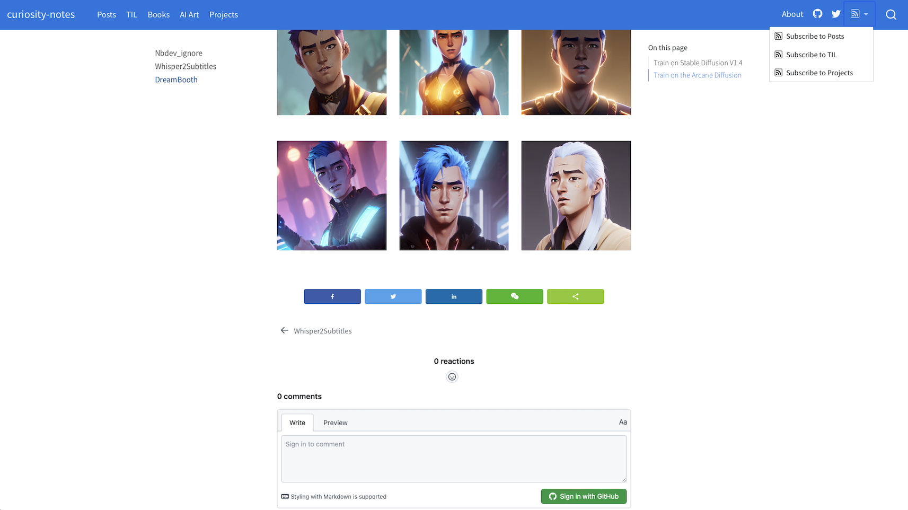

Explore the GitHub Repo for this website to see how it’s set up: 
It took me some time to migrate to Quarto. Here are some the tips that might be helpful if you are thinking about doing the same.
2 Enable Line Numbers in Code Blocks
Some useful settings for code blocks in _quarto.yml:
3 Add A Comment Section that Supports Latex
Giscus is a comments system powered by GitHub Discussions. It supports Latex, so that visitors can type math equations in the comment section.
Make sure you configure the repository and the Discussion Category on Giscus. This will generate the script code. We don’t need to copy that code, but we do need to note the data-repo-id, and data-category-id.
To enable it for a page, include the following in the YAML front matter:
4 Add RSS Feed
Add
feed: truein the listing page Include a feed for your listing by including thefeedoption in your listing page:An RSS file will automatically be generated using the name of the the file in the same location as the listing page. For example,
index.qmdwill produce a feed atindex.xml.Include the path to the xml file
We need to explicitly include links to these xml files. On this website, I created 3 RSS feeds: Posts, TIL and Projects. I included them in
_quarto.ymlunder a menu on the right side of the navigation bar:website: navbar: right: - icon: rss menu: - text: Subscribe to Posts icon: rss href: https://feynlee.github.io/curiosity-notes/index.xml aria-label: Posts RSS - text: Subscribe to TIL icon: rss href: https://feynlee.github.io/curiosity-notes/TIL.xml aria-label: TIL RSS - text: Subscribe to Projects icon: rss href: https://feynlee.github.io/curiosity-notes/projects.xml aria-label: Projects RSS
6 Add An Annotation Tool
You can enable hypothes on your website so that visitors can highlight and annotate your posts.
This is enabled for my website. You can see the Hypothesis UI at the far right of the page. You can also drag cursor over texts to make your own highlights and annotations on this page.
7 Enable Anchor Sections
Hover over a section title to see an anchor link. An anchor link makes it possible to share and reference the exact position of the specified section. Enable/disable this behavior with:
Anchor links are also automatically added to figures and tables that have a cross reference defined.
8 A Custom Listing Page
The Books page on this website is created with a custom listings page. With EJS Template, one can create a very customized listings page to suit one’s needs.
Sorting, filtering and pagination can also be enabled for your listings page with very little effort.